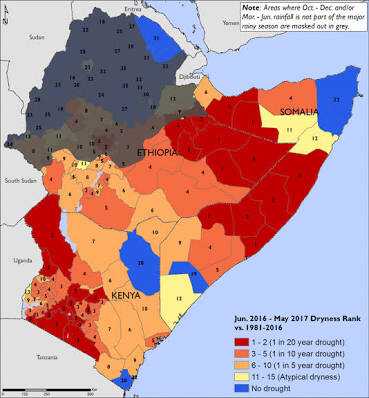

“The 2011 Horn of Africa drought left an estimated 4.5 million people in need of emergency food aid.” (FoodSecurityPortal, 2015) The cereal markets supplies went down drastically, causing the prices for food to spike in a similar manner. In 2012 the rains had improved a bit, however, the incident had still left millions requiring relief food assistance.
In 2017, a new drought has arisen, leaving 8.5 million people in urgent needs of food. The drought had led to widespread livestock deaths and the dwindling sizes of herds. The people in Ethiopia rely on their agriculture and food produce, not only to feed them but to also provide them the income to live. The drought was caused by El Nino, a weather event caused by the shifting of wind causing warm water to move east in the Pacific Ocean.
Source: https://earthobservatory.nasa.gov/images/19764/drought-in-ethiopia
Source: https://fews.net/sites/default/files/documents/reports/FEWS_NET_Horn_of_Africa_June%202017_Drought_Map_Book.pdf